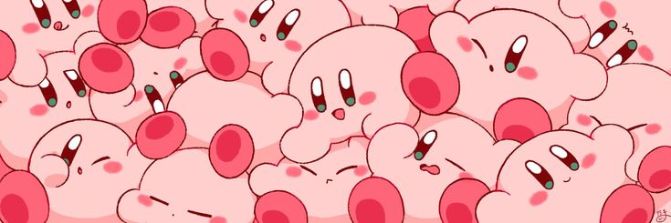
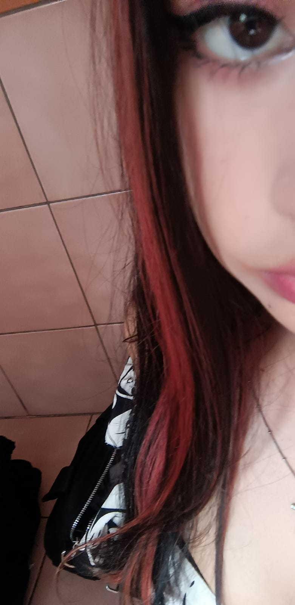
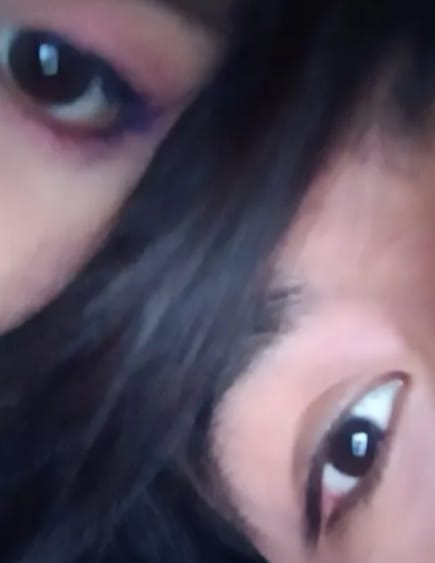
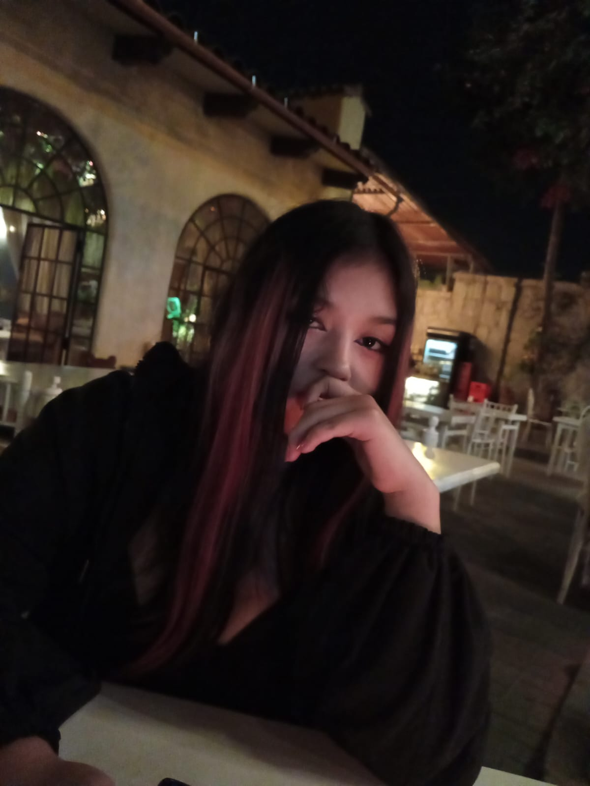
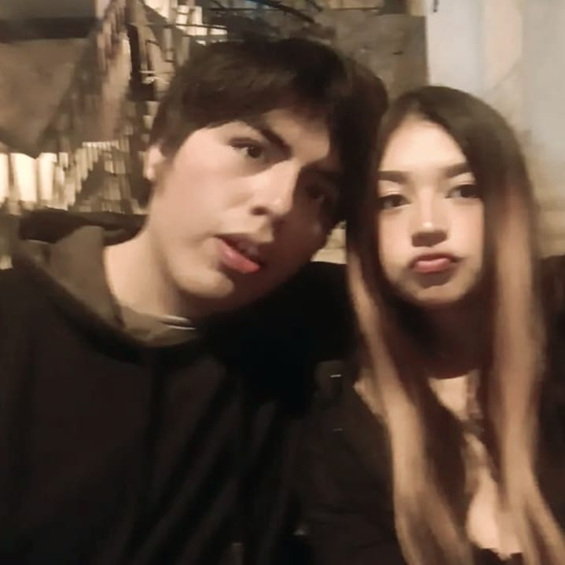

Anna
Quiero que escuches estas palabras y no respondas a lo que te diré.
Siento que debo mostrar mis sentimientos contigo. Últimamente no me he sentido bien con el rumbo de mi vida. Presiento que no durará mucho, y antes de que llegue mi despedida, necesito tu atención.
Es complicado expresar mis verdaderos sentimientos en persona. Y tú, siendo una persona tan importante para mí, se me hace extraño no poder hacerlo. Es una presión en mí que me hace dudar de todo, del cariño o querer que me tienes. De cosas tan simples... siento miedo de volver a decepcionarme, desilusionarme, y en ese instante se me nubla la mente.
A continuación, lo que realmente siento por ti:
Eres un deseo, un reconfortante deseo, quizás de obra divina, que me hizo creer que el amor existe.
Nuestro tiempo de amistad no ha sido mucho en perspectiva general, tan solo unos 7 u 8 meses. Pero te quiero tanto, te anhelo tanto, me encantaría ser enteramente parte de ti y solo de ti. Me mostraste una realidad que se me escapaba, algo que sabía que estaba ahí pero no tomaba importancia. ¿Cómo puede ser posible que alguien como tú sea tan perfecta y al mismo tiempo viva en una realidad imperfecta? Pienso en eso y se me viene a la mente una rosa creciendo en un pantano. Increíble, ¿no?

Desde que me mostraste más de ti, de las pequeñas y abismales situaciones de tu vida, me quedé fascinado. ¿Cómo era posible que guardases todo eso? Al principio, cuando apenas sabía tu nombre y dónde vivías, pensé que eras una chica más. Pero no lo eres, nunca lo fuiste. Me alegro de haberme equivocado; soy tan feliz de que iluminaras mis ojos.
Te digo muchas veces lo bonita que eres, no sé si me crees realmente. Anna, eres indudablemente hermosa de pies a cabeza. No importa con qué ropa te vistas, con vestido, con unos jeans o el pantalón más araposo, tú te ves perfecta. Y aunque me hayas dicho que el físico es lo de menos, contigo no hay cómo dejar de mirarte, apreciarte y sentirme afortunado de tener estos ojos.
Tu rostro es una tierna caricia a toda mi existencia. Aún recuerdo verte sonreír luego de estar enojada conmigo. Te veías tan tierna, adorable, que me hubiera gustado verte más tiempo. Tus ojos grandes me encantan, tus ligeras pestañas, tus pupilas como un agujero negro que me consume, el blanco en tus ojos contrasta muy bien. Y no es que solo sean grandes y ya, son más que eso, porque puedo ver tus sentimientos a través de ellos. Son una bonita ventana en tu rostro que, cuando alumbra el sol, me gustaría posarme sobre esa ventana sin nada más que mirar al exterior. Por otro lado, tus labios dibujan un corazón, una sonrisa linda y seductora que en el pasado mostraba tu amor. Tu nariz me parece que representa más tu enojo cuando lo estás, y a la vez te enternece cuando estás muy feliz. Me gusta verte sonreír porque puedo notar tus mejillas sonrojadas. Tu cabello adorna el regalo que es tu rostro como si fuese un listón.
Pero Anna no es solo una cara bonita, un cuerpo codiciado. No, es mucho más que eso. ¿Cómo podría enamorarme de una persona solo por su físico? Hay mucho más en ti, muchas razones por las cuales me entregaría a la muerte si es para verte otra vez. Con las que conozco hasta ahora, bastan para poder sacrificarme por tu felicidad.
Eres frágil, y eso no es malo. Eres una niña tierna y simpática que quiere seguir riendo, disfrutando, descubriendo cada cosa que hay en esta vida. Tu fragilidad no podría ser un simple vidrio, un candelabro o pedazo de decoración. Es mucho más particular. Serías un diamante, un diamante que ha sido golpeado muchas veces, uno que se resquebrajó, pero resiste y resiste, que no se romperá por completo. La luz te atraviesa y te vuelves luz. Autenticidad, más que única entre distintas formas, la tuya tiene miles de vértices. Fuerte y resistente, más que yo, más fuerte que aquellos que debieron cuidarte y protegerte. Tu sinceridad puede que queme, pero no hiere. ¿Cómo podríamos ver ante la oscuridad sin algo de fuego?
Tu preocupación es real, algo brusca a veces, pero es TAN REAL como la vida misma. La confianza que generas es digna de un padre en confesión. Eres leal, lealtad que muy pocas veces se encuentra en estos tiempos. Graciosa ante la adversidad. Inteligente emocionalmente, es una de tus características más fuertes en ti, un ejemplo que deseo seguir. Responsable con tu familia, con tus amistades, con lo que haces y deseas hacer. Si quieres algo realmente, lo haces notar. No eres fría, Anna, solo guardas ese sincero querer, tan profundo que es hermoso.
En el mar, la superficie se ve larga y distante, al sumergirte no sabes qué encontrarás, y aunque no sepas, te atreves. El arrecife es hermoso, pero hay mucho más en la profundidad del océano. No es un misterio para resolver, sino un misterio para apreciar.
Das paz, generas alivio y dulzura. Recorres mi mente como música, en ritmo lento y rápido, estimulando mi ser.
Cambiaría diez mil mujeres por ti. Cambiaría mil mujeres obedientes por ti. Cambiaría cien supermodelos por ti. Cambiaría diez mujeres adineradas por ti. No vales lo que una mujer vale, el valor se vuelve invaluable e inalcanzable.
No pensé en amar, pero lo que me generas es igual o más incomprensible que el amor.
